Пираты Соломенной Шляпы
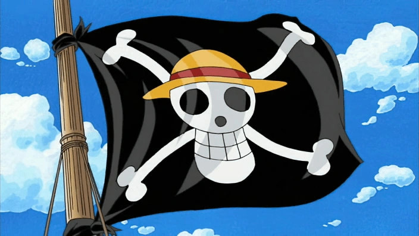
Команда Мугивар — главные герои истории, во главе которых стоит Монки Д. Луффи. Они путешествуют по Гранд Лайн в поисках легендарного сокровища One Piece, преодолевая любые препятствия ради исполнения своих мечтаний.
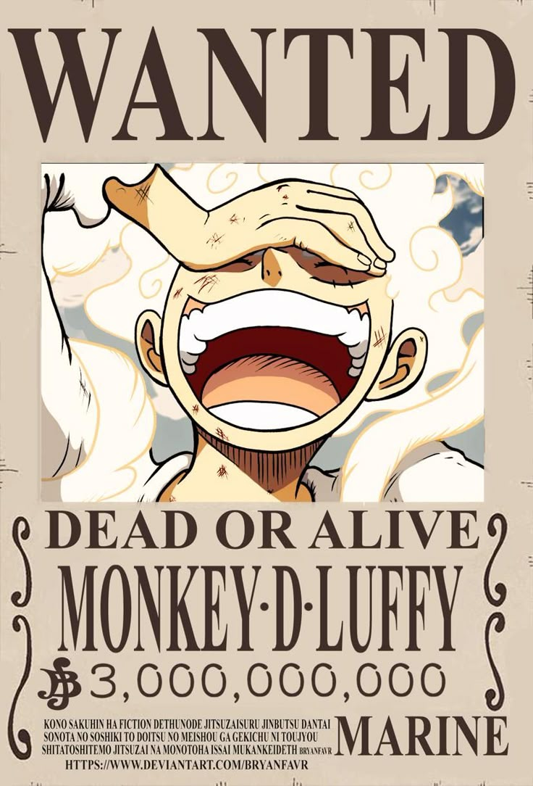
«Соломенная Шляпа» Монки Д. Луффи
Награда: 3,000,000,000 ฿
Капитан команды. Мечтает стать Королем Пиратов. В детстве получил свою знаменитую соломенную шляпу от Шанкса, дав ему обещание вернуть её, когда станет великим пиратом.
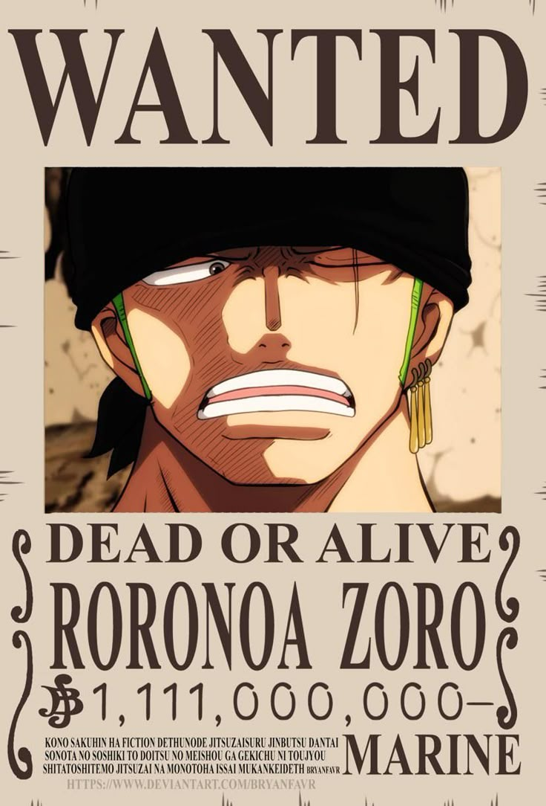
«Охотник на пиратов» Ророноа Зоро
Награда: 1,111,000,000 ฿
Старпом и мечник, использующий уникальный стиль трех мечей. Стремится стать величайшим фехтовальщиком в мире.
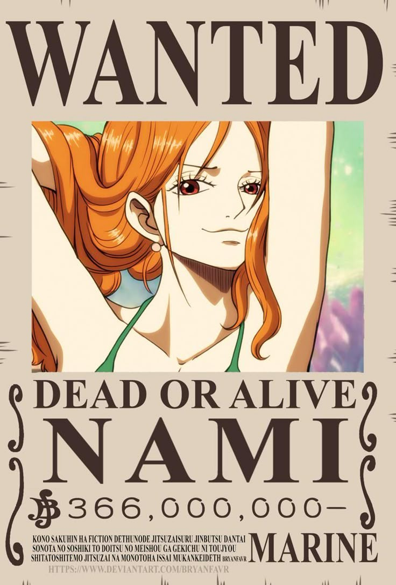
«Кошка воровка» Нами
Награда: 366,000,000 ฿
Гениальный навигатор и картограф. Мечтает нарисовать карту всего мира. А также очень любит деньги.
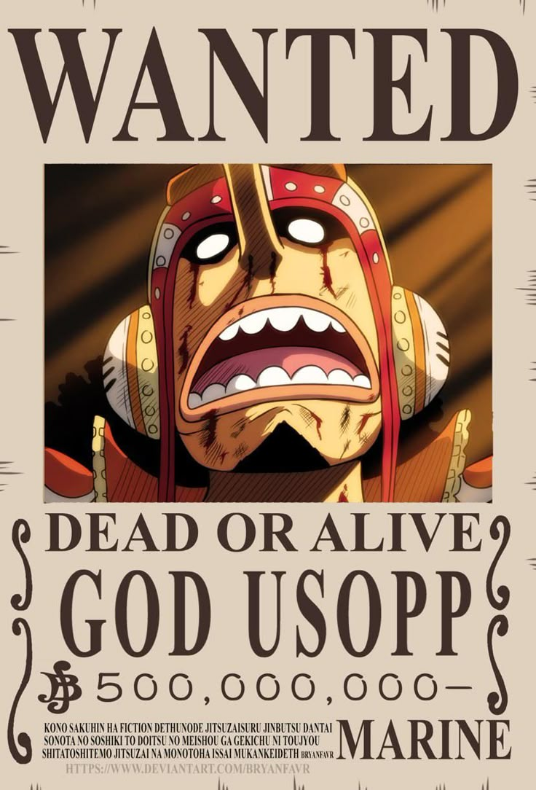
«Бог» Усопп
Награда: 500,000,000 ฿
Снайпер команды. Несмотря на свою обычную трусость, мечтает стать храбрым воином моря.
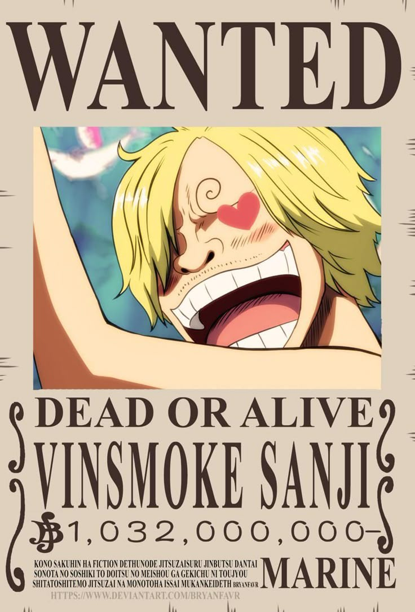
«Черная нога» Винсмок Санджи
Награда: 1,032,000,000 ฿
Кок и мастер рукопашного боя ногами. Никогда не бросит голодающего. Джентельмен. Мечтает найти море Олл Блю.
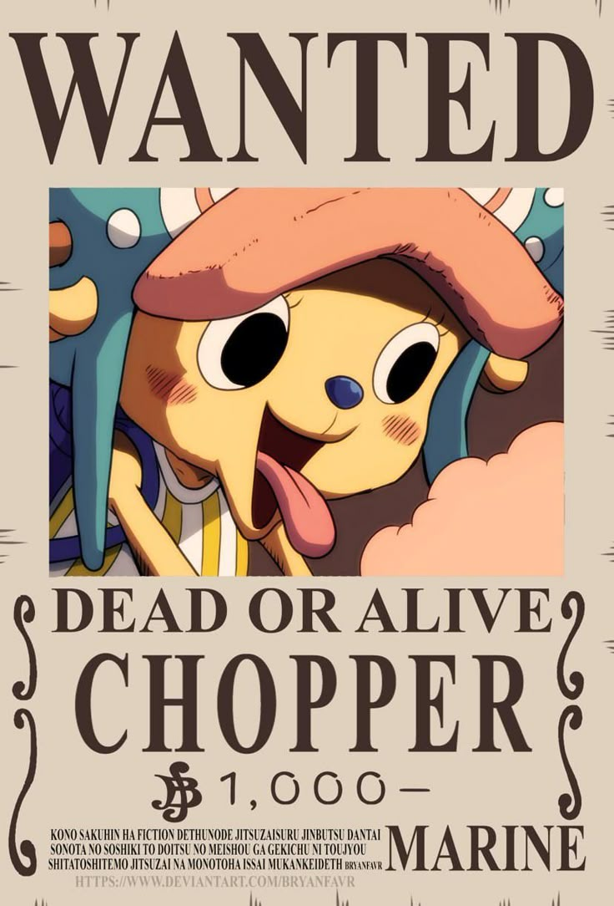
«Любитель сахарной ваты» Тони Тони Чоппер
Награда: 1,000 ฿
Корабельный врач. Северный олень, съевший плод Человек-Человек (Хито Хито но Ми). Мечтает создать лекарство от всех болезней.
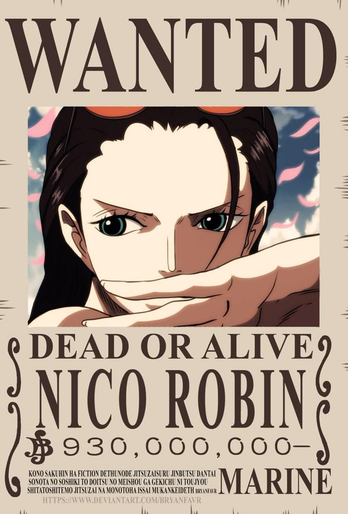
«Свет революции» Нико Робин
Награда: 930,000,000 ฿
Археолог и единственный выживший человек, способный читать древние Понеглифы. Мечтает найти Рио Понеглиф, в котором содержится истинная история мира.
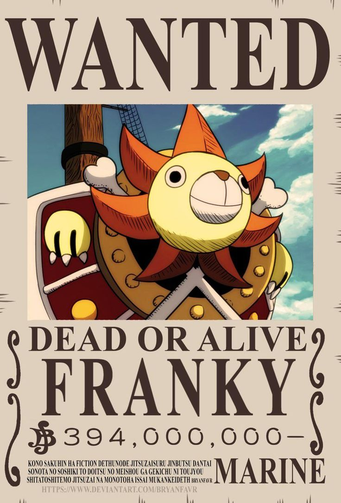
«Киборг» Фрэнки
Награда: 394,000,000 ฿
Киборг и первоклассный корабельный плотник. Построил корабль мечты — Таузенд Санни. Мечтает увидеть как его корабль покорит Гранд Лайн.
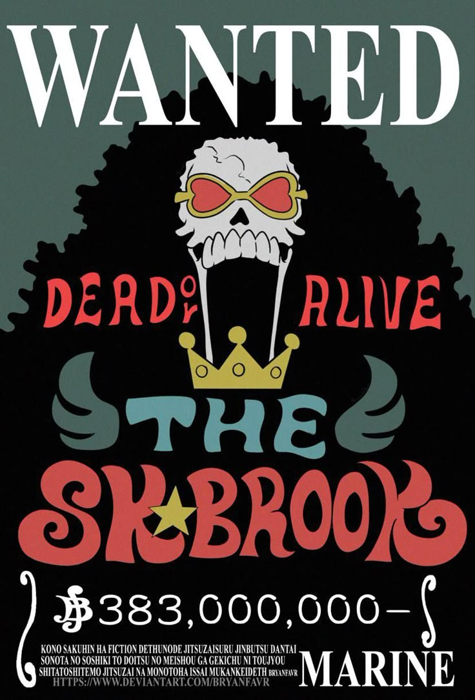
«Соул Кинг» Брук
Награда: 383,000,000 ฿
Музыкант и живой скелет. Сражается с помощью меча-трости. Мечтает совершить кругосветное путешествие и встретиться со старым другом — Лабуном.
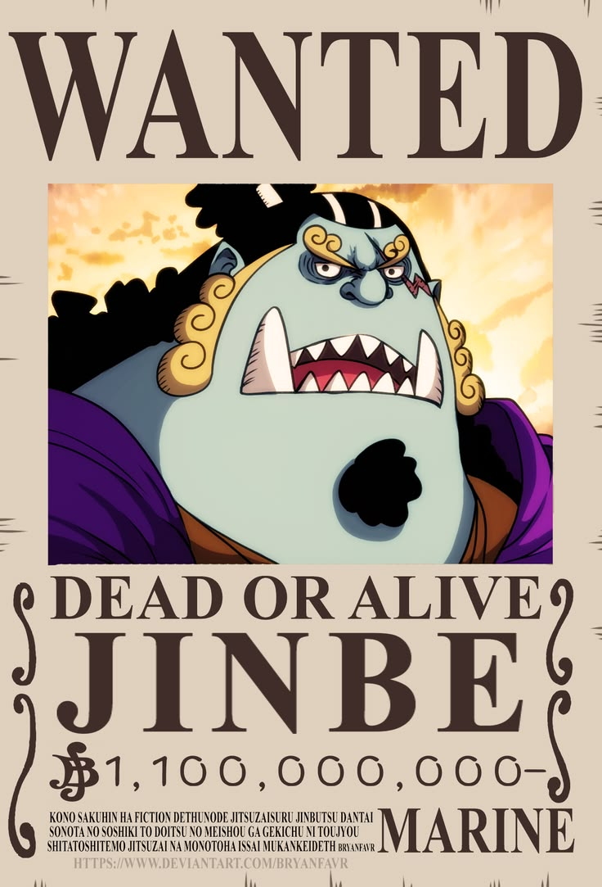
«Рыцарь Моря» Дзимбей
Награда: 1,100,000,000 ฿
Рулевой команды, бывший Великий Корсар и могучий рыбочеловек. Мастер карате рыболюдей. Мечтает объединить рыболюдей и людей.
Друзья и потенциальные кандидаты
Нефертари Д. Виви
Принцесса Алабасты и официальный бывший член команды. Оставила мечту продолжить путешествие вместе, потому что очень любит свою страну.
Бон Клэй
Верный союзник Луффи, который неоднократно жертвовал собой ради Луффи и друзей. Пожертвовал своей свободой, чтобы помочь Луффи сбежать из тюрьмы Импел Даун.
Кэррот
Отважная воительница из племени Минков. Была союзницей во время путешествия на Пирожных островах и в стране Вано.
Ямато
Дочь Кайдо, принявшая волю Одена. Помогала команде во время путешествия в Вано. Поклялась однажды выйти в море вместе с Луффи и ребятами.
Лилит
Один из клонов величаешего ученого доктора Вегапанка, воплощение «Злости», ставшая ценным спутником команды во время событий Эггхеда и после.